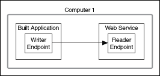

Streaming data and sending commands are models of communication for sending data between two LabVIEW applications. Use network streams to accomplish these tasks. A network stream is a lossless, unidirectional, one-to-one communication channel that consists of a writer and a reader endpoint. Use the Network Streams functions and the Network Stream Endpoint properties to design applications using network streams.
|
Note��You can use network streams on Windows and Real-Time systems only. |
You can use network streams to transfer any LabVIEW data type except LabVIEW classes and most refnums. The only refnum you can transfer with network streams is the Vision Image data type. The following data types transfer at the fastest rates:
The following figures illustrate some of the ways you can configure network streams to transfer data.

In the figure above, a network stream transfers data between two applications on different computers.

In the figure above, a network stream transfers data between a built application and a Web service.
|
Note��To facilitate network communication, network streams require more overhead than non-networked data transfer methods. To transfer data between loops within a single application, National Instruments recommends using the following methods:
|

In the figure above, a network stream transfers data between an application on one computer to two applications on another computer.
In the figure above, a network stream transfers data from an application on one computer to two applications on different computers.
Each endpoint uses a FIFO buffer to transfer data. The Network Streams Engine (NSE) uses LogosXT to transfer data from the FIFO buffer on the writer endpoint to the FIFO buffer on the reader endpoint.
The following figure illustrates the flow of data in a network stream.
In the figure above, data flows in the following order.
Use shared variables to publish the latest value in a data set to many computers. Conversely, use network streams to log every point of data on one computer.
For example, assume that you are using an accelerometer to detect the vibrations of a pump that is re-pressuring natural gas in a pipeline. You are processing the vibration data on a CompactRIO target to monitor for bearing fault to ensure that the pump does not fail. However, the CompactRIO target does not have enough memory to analyze the data. Therefore, you must send the data to a desktop computer that has enough memory to store, analyze, and display that data.
Because shared variables are optimized for publishing the latest value of data only, they could miss a critical data point. However, network streams would stream every point of data to the desktop computer so you could monitor the condition of the engine.
|
Note��Network streams can induce jitter in real-time (RT), time-critical loops. Therefore, if you want to stream data from a time-critical loop with network streams, National Instruments recommends that you first share the data with a lower-priority loop. Then, use network streams to stream the data to another application. |